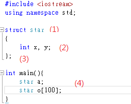
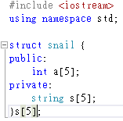
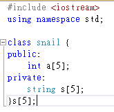
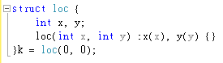

第
九章 struct&class
9.1
自定義資料型別
假
如今天給你A星的座標，給你其他星的座標，要你判斷之間距離，得出了以下變數
(1)A�星的座標(x,y)(2)其
他星的座標(x,y)
-->
int ax, ay, ox[100],
oy[100];
但今天你覺得不太雅觀或可讀性低，你可以自己定義一個結構

(1)star 自定義資料型別名稱
(2) int x,y; 自定義資料型別內的內容
(3) }; }和;之間命名一個變數，也可以如(4)一樣另外新增變數。
(注意! }後的;不可刪除)
這樣程式可讀性變高了!!!
9.2 struct&class的比較
除了struct，class也可以用來當自定義資料型別，但它們有什麼不同?
其實只有一個，就是當它們未說明裡面的內容是 public(所有區域都可以用)、private(只有在此區域內才可被使用/更改)
struct內都是 public，class內都是private
要讓兩者相同，如圖:

本章的內容為了方便，都用struct來說明
9.3 建構器
struct的功用不只上述說明，它還有可以做建構器

建構器裡的變數一起出現(輸入、輸出、做判斷)，
9.4 大數和更精浮點數
struct也可以用來存很大很大的數和很小很小的浮點數